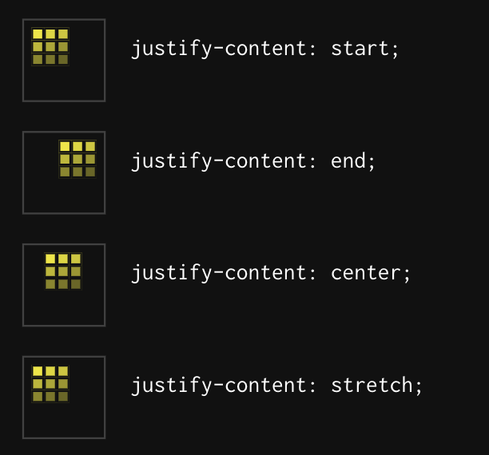
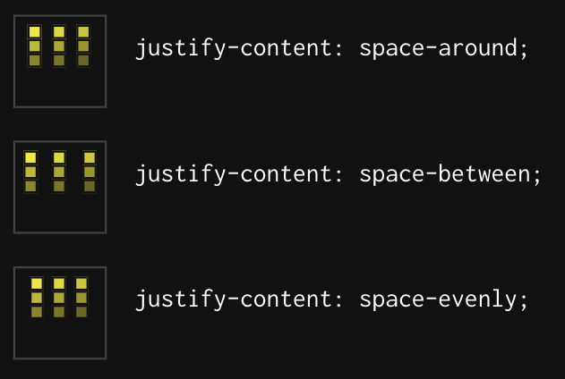
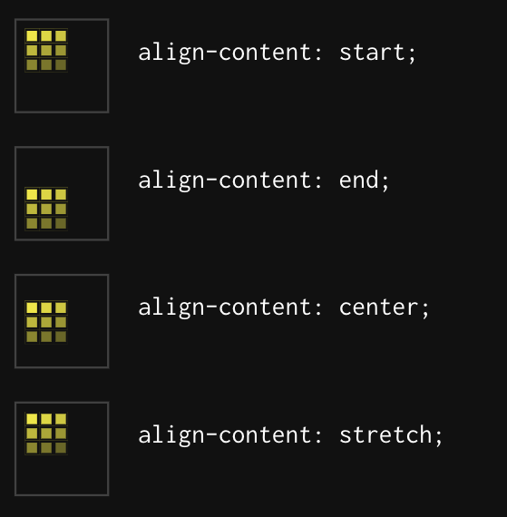
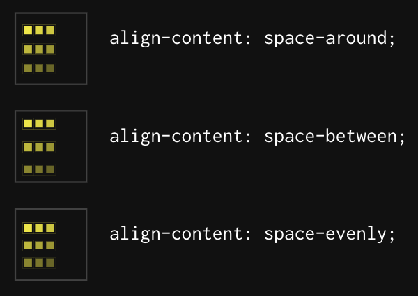

CSS Grid Layout
CSS Grid Layout
(aka "Grid")
is a two-dimensional grid-based layout system that aims to do nothing less than completely change the way we design grid-based user interfaces.Basics
and
Browser Support
To get started
- to define with
display: grid; - set column size with
grid-template-columns - set row size with
grid-template-rows - place child elements with
grid-columnandgrid-row

Important Terminology
Grid Container
the element on which display: grid is applied
Grid item
the children of the grid container
Grid Line
the dividing lines that make up the structure of the grid
Grid Track
the space between two adjacent grid lines
Grid Cell
the space between twoadjacent row and two adjacent column grid lines

Grid Area
the total space surrounded by four grid lines
Properties for the Grid Container
Display
.container {
display: grid | inline-grid;
}
Grid-template-columns and
grid-template-rows
.container {
grid-template-columns: 40px 50px auto 50px 40px;
grid-template-rows: 25% 100px auto;
}
.container {
grid-template-columns: repeat(3, 20px [col-start]);
}
fr
unit
.container {
grid-template-columns: 1fr 1fr 1fr;
}
Grid-template-areas
.item-a {
grid-area: header;
}
.item-b {
grid-area: main;
}
.item-c {
grid-area: sidebar;
}
.item-d {
grid-area: footer;
}
.container {
display: grid;
grid-template-columns: 50px 50px 50px 50px;
grid-template-rows: auto;
grid-template-areas:
"header header header header"
"main main . sidebar"
"footer footer footer footer";
}
grid-template
.container {
grid-template: none | <grid-template-rows> / <grid-template-columns>;
}
.container {
grid-template:
[row1-start] "header header header" 25px [row1-end]
[row2-start] "footer footer footer" 25px [row2-end]
/ auto 50px auto;
}
grid-column-gap and
grid-row-gap
.container {
grid-column-gap: <line-size>;
grid-row-gap: <line-size>;
}
grid-gap
.container {
grid-gap: <grid-row-gap> <grid-column-gap>;
}
justify-items
.container {
justify-items: start | end | center | stretch;
}
align-items
.container {
align-items: start | end | center | stretch;
}
justify-content
.container {
justify-content: start | end | center | stretch | space-around | space-between | space-evenly;
}


align-content
.container {
align-content: start | end | center | stretch | space-around | space-between | space-evenly;
}


grid-auto-columns and
grid-auto-rows
.container {
grid-auto-columns: <track-size> ...;
grid-auto-rows: <track-size> ...;
}
grid-auto-flow
.container {
grid-auto-flow: row | column | row dense | column dense;
}
grid
.container {
grid-template-rows: 100px 300px;
grid-auto-flow: column;
grid-auto-columns: 200px;
}
.container {
grid: 100px 300px / auto-flow 200px;
}